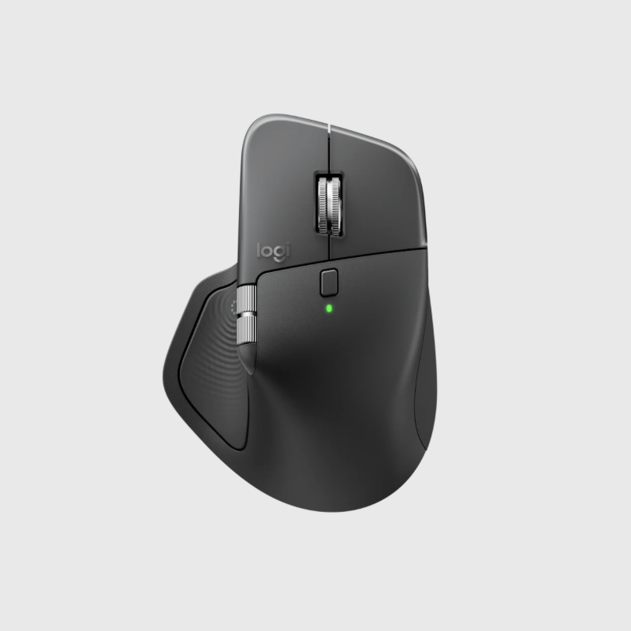
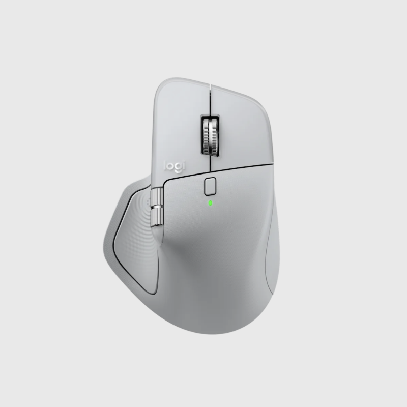

마스터 시리즈
햅틱 피드백이 탑재된 고성능 무선 마우스


그래파이트, 페일 그레이
특정 동작에 대한 햅틱 피드백을 커스터마이징할 수 있고 몰입감 넘치는 컨트롤과 정확도를 선사하는 MX Master 4를 만나보세요. Actions Ring 바로가기 키와 MX Master 4를 활용하면 커서에서 도구와 필터를 이용할 수 있어 시간을 최대 33%까지 절약할 수 있습니다. 추가 기능: 2배 더 좋아진 연결, MagSpeed 스크롤 휠로 초고속 스크롤링, 유리를 포함한 모든 표면에서 8K DPI로 트랙킹 가능 및 Logi Options+에서 커스터마이징 가능.